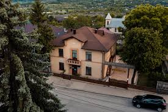

|
Orașul Călărași are o istorie bogată care începe încă din perioada medievală. Localitatea era un important punct comercial și agricol. În prezent orașul este cunoscut pentru dezvoltarea viticulturii și pentru peisajele naturale frumoase. |
 |